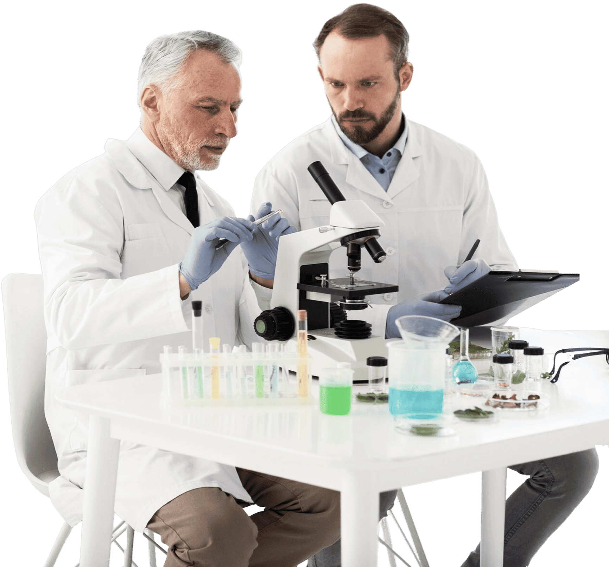
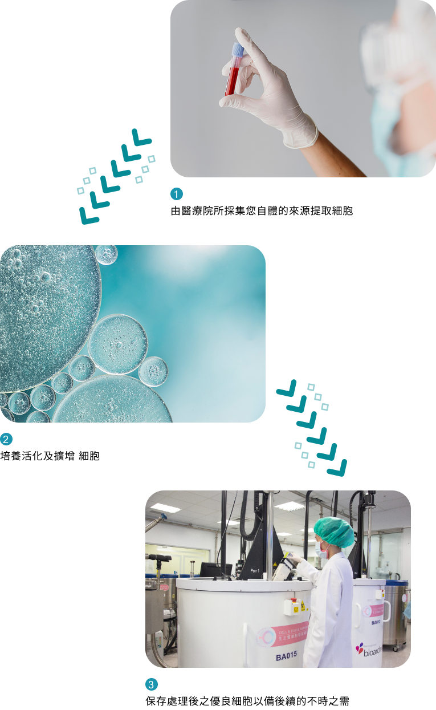

NK細胞又稱自然殺手細胞(Natural Killer Cell)，
是人體免疫系統的前線防護，
能夠即時偵測並清除體內的異常細胞。
而生之寶提供專業的NK細胞分離、培養與保存服務，
讓您在健康狀態下預留最佳的免疫資源，
成為未來免疫醫療的重要保障。
而NK細胞也是免疫系統中不可或缺的一員，
能在全自動的辨識並攻擊異常細胞，
就像人體中的「巡邏兵」，
持續監控全身狀態，維護免疫平衡。
而國際研究顯示，
NK細胞也與抗老化以及再生醫療領域密切相關。
NK免疫細胞 NK CELL
NK CELL

為什麼要儲存NK免疫細胞 WHY
隨著年齡的增長，
身體內的NK細胞數量與功能都會逐年下降，
這會導致免疫力隨時間減弱。
而提前預留健康時期的NK細胞，
不僅能鎖住NK細胞的最佳狀態，
也能為自己未來的健康留下籌碼。
這是一份「對未來健康遠謀」，
正可以成為未來健康的關鍵選擇。
立即儲存
身體內的NK細胞數量與功能都會逐年下降，
這會導致免疫力隨時間減弱。
而提前預留健康時期的NK細胞，
不僅能鎖住NK細胞的最佳狀態，
也能為自己未來的健康留下籌碼。
這是一份「對未來健康遠謀」，
正可以成為未來健康的關鍵選擇。
WHY
NK免疫細胞 儲存流程 PROGRESS
在各類免疫相關研究中，
免疫細胞療法一直是備受關注的重要方向之一。
其基本概念，
是先，
於體外進行培養與處理，
再經適當的活化與增生後，
回到身體中，
協助支持免疫系統的運作與平衡。
過這樣的方式，
免疫細胞得以在適合的條件下被重新調整與培養。
免疫細胞療法的研究目標，
在於提升免疫系統整體的應對能力，
讓身體的防禦機制能維持在良好狀態，
持續發揮其原有的免疫功能。
立即儲存
免疫細胞療法一直是備受關注的重要方向之一。
其基本概念，
是先，
於體外進行培養與處理，
再經適當的活化與增生後，
回到身體中，
協助支持免疫系統的運作與平衡。
過這樣的方式，
免疫細胞得以在適合的條件下被重新調整與培養。
免疫細胞療法的研究目標，
在於提升免疫系統整體的應對能力，
讓身體的防禦機制能維持在良好狀態，
持續發揮其原有的免疫功能。
PROGRESS
